Biodiversität
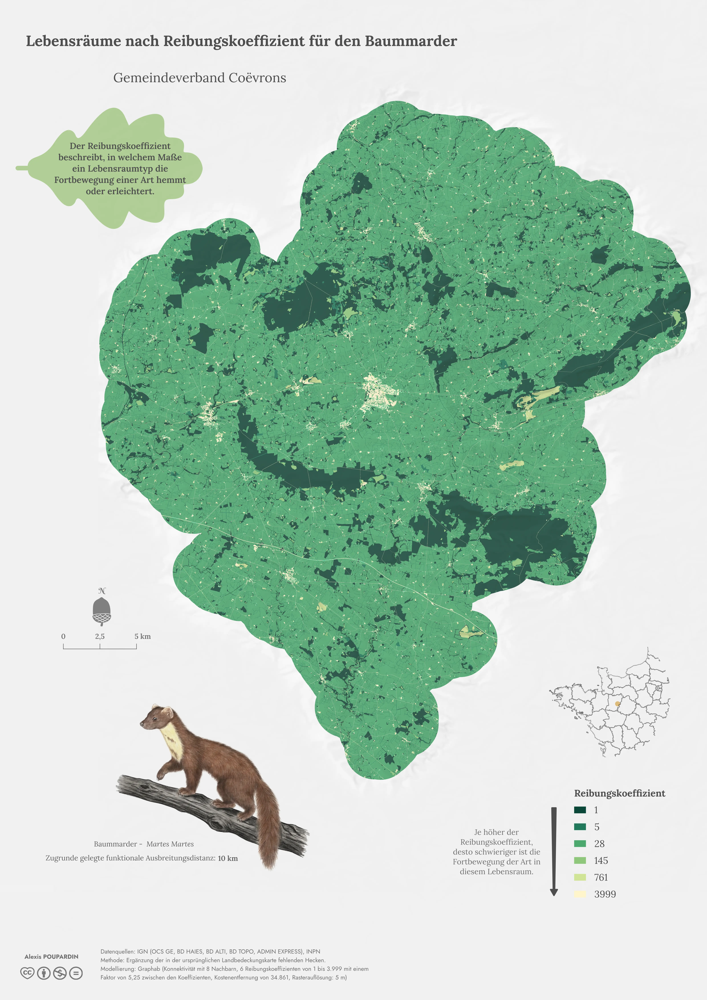
Lebensräume nach Reibungskoeffizient für den Baummarder
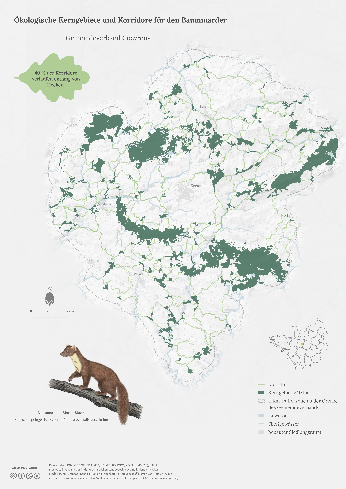
Ökologische Kerngebiete und Korridore für den Baummarder
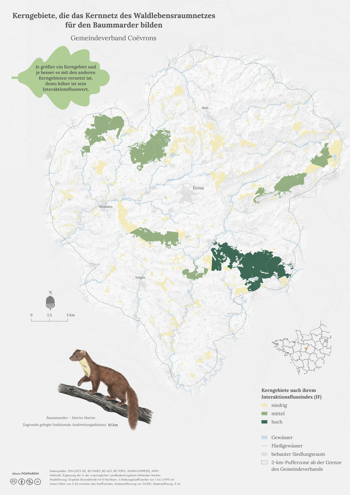
Kerngebiete, die das Kernnetz des Waldlebensraumnetzes für den Baummarder bilden
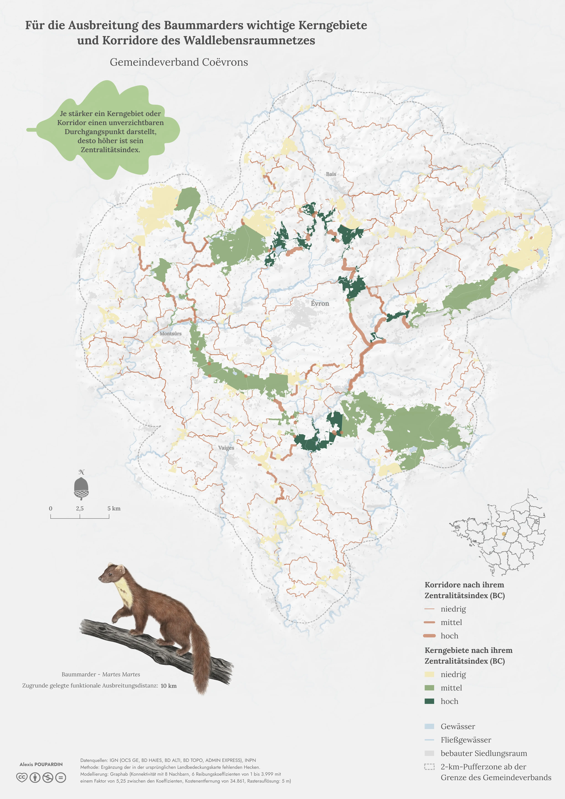
Für die Ausbreitung des Baummarders wichtige Kerngebiete und Korridore des Waldebensraumnetzes
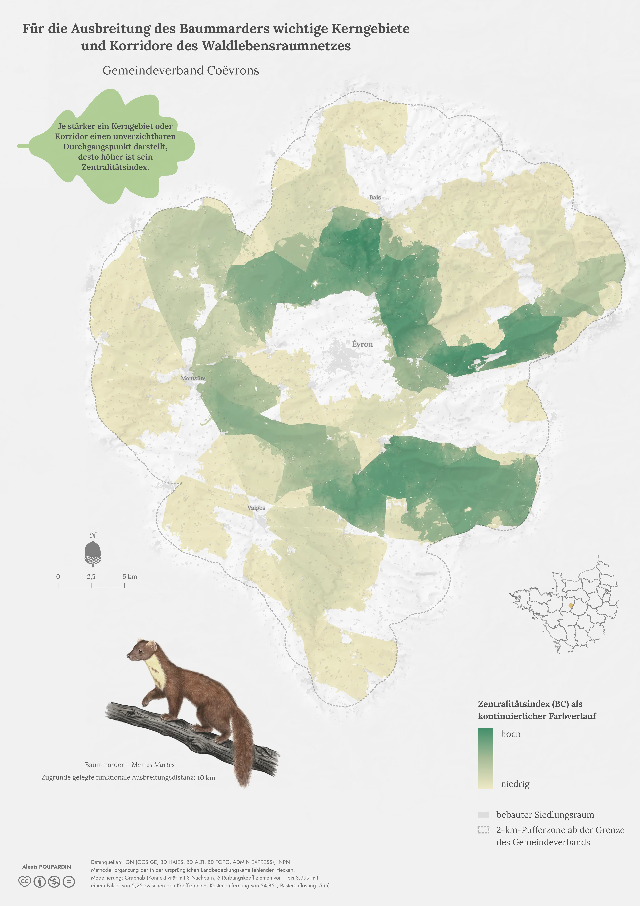
Für die Ausbreitung des Baummarders wichtige Kerngebiete und Korridore des Waldebensraumnetzes (Raster)
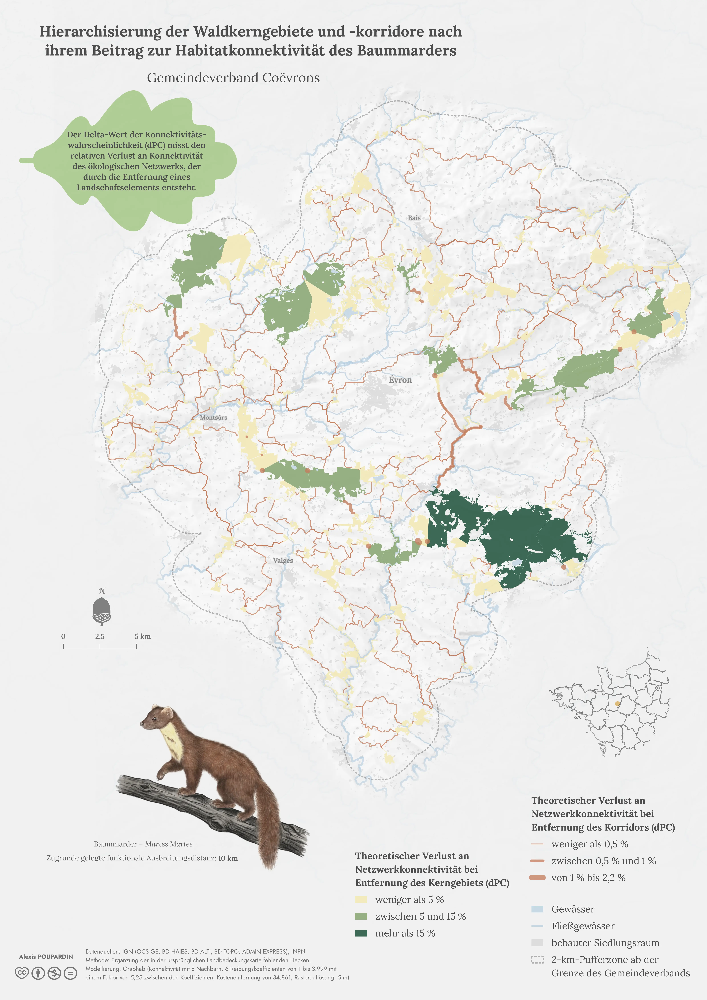
Hierarchisierung der Waldkerngebiete und -korridore nach ihrem Beitrag zur Habitatkonnektivität des Baummarders
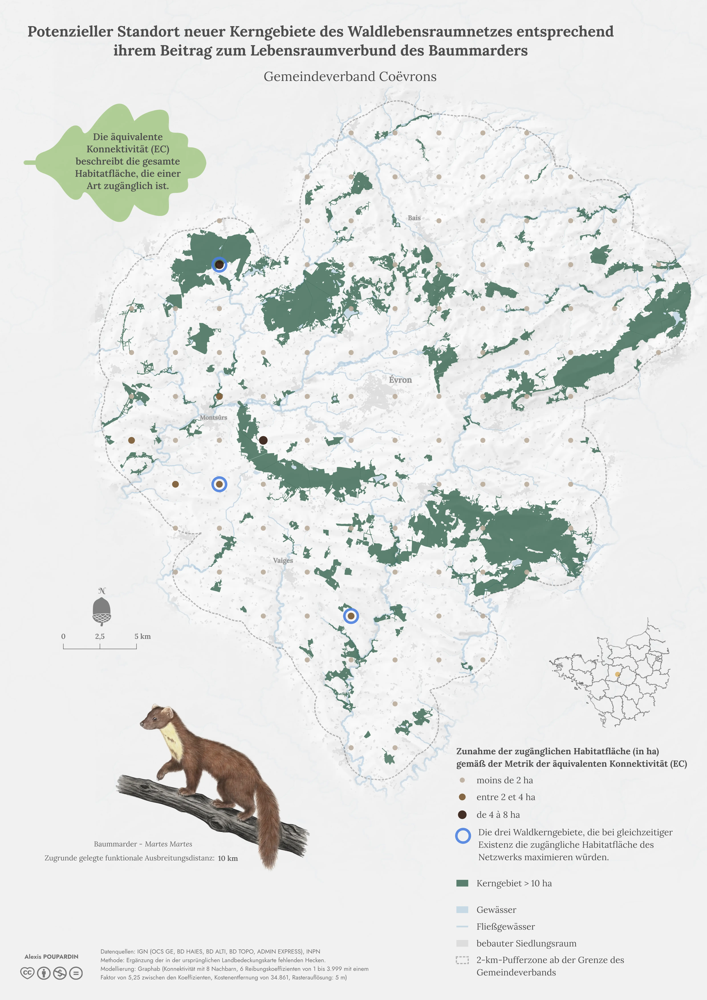
Potenzieller Standort neuer Kerngebiete des Waldlebensraumnetzes entsprechend ihrem Beitrag zum Lebensraumverbund des Baummarders
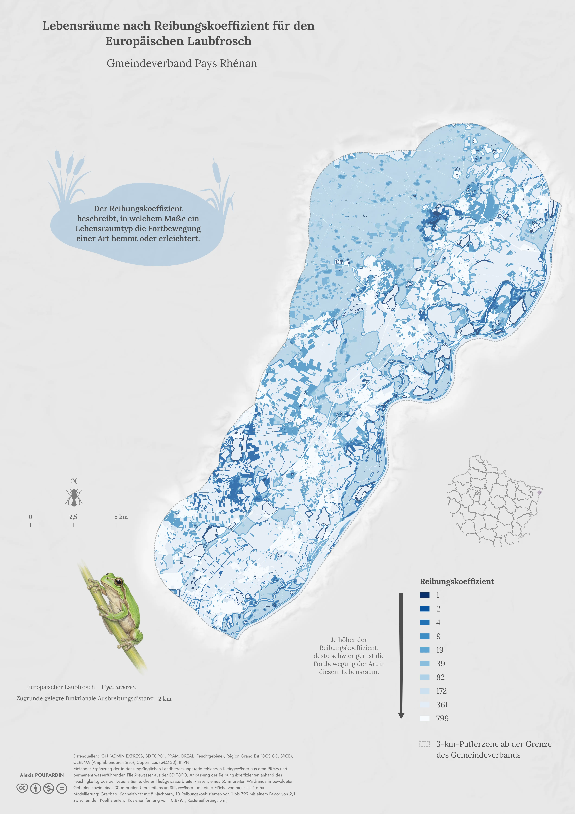
Lebensräume nach Reibungskoeffizient für den Europäischen Laubfrosch
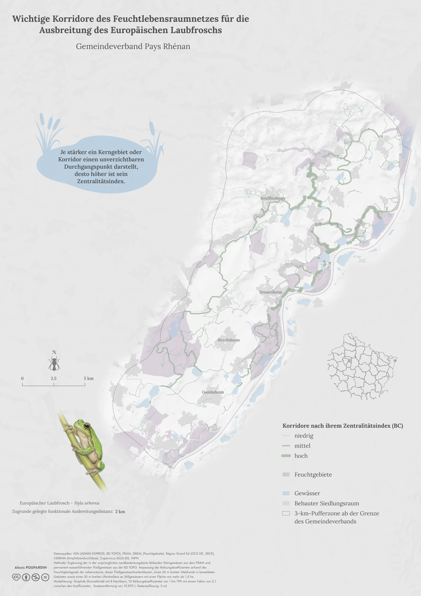
Wichtige Korridore des Feuchtlebensraumnetzes für die Ausbreitung des Europäischen Laubfroschs
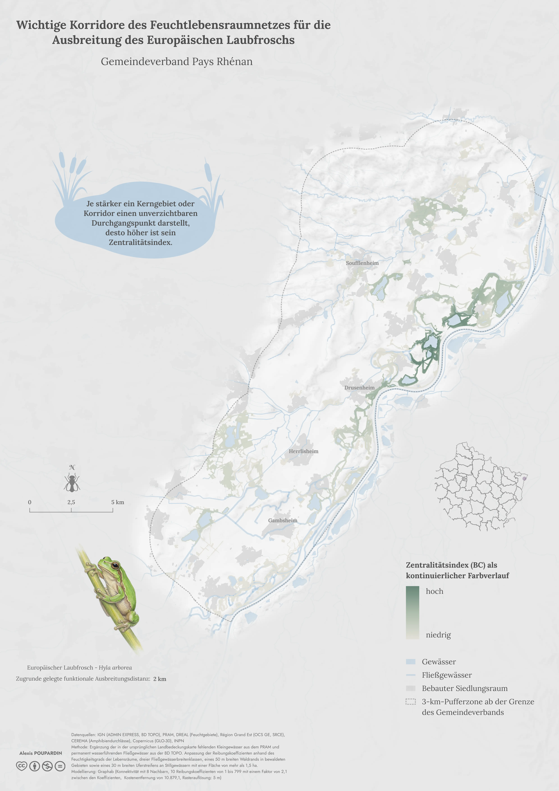
Wichtige Korridore des Feuchtlebensraumnetzes für die Ausbreitung des Europäischen Laubfroschs (Raster)
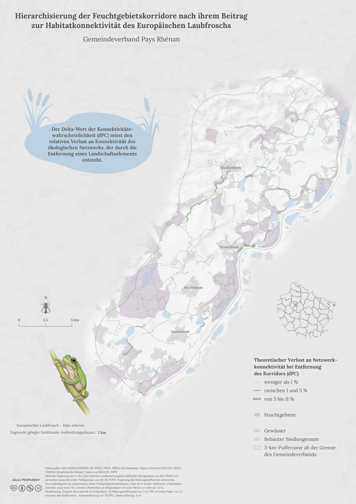
Hierarchisierung der Feuchtgebietskorridore nach ihrem Beitrag zur Habitatkonnektivität des Europäischen Laubfroschs
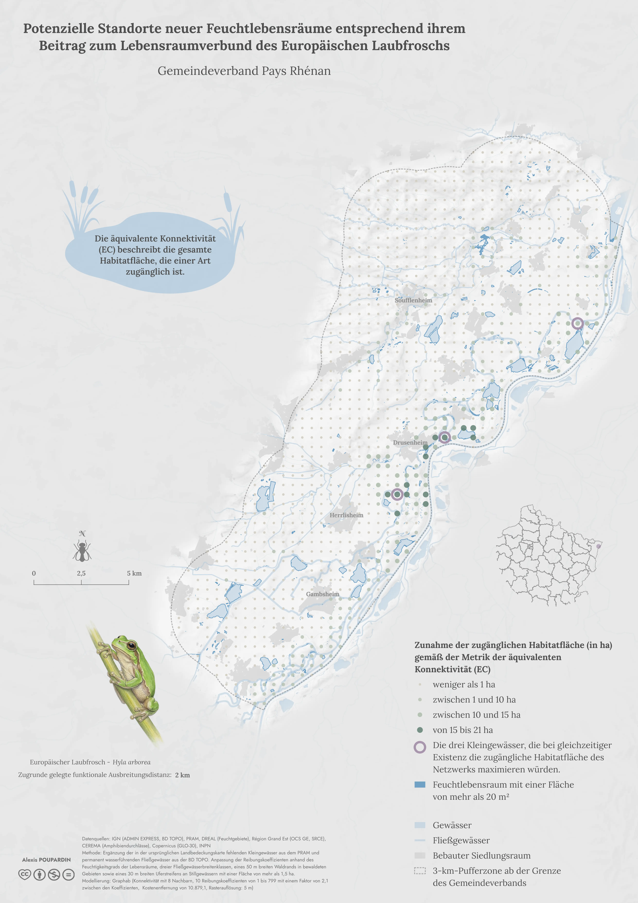
Potenzielle Standorte neuer Feuchtlebensräume entsprechend ihrem Beitrag zum Lebensraumverbund des Europäischen Laubfroschs
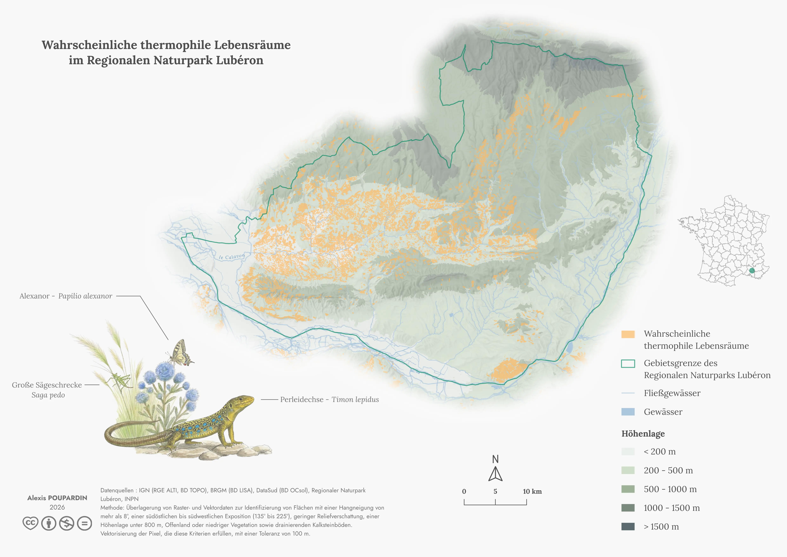
Wahrscheinliche thermophile Lebensräume im Regionalen Naturpark Lubéron